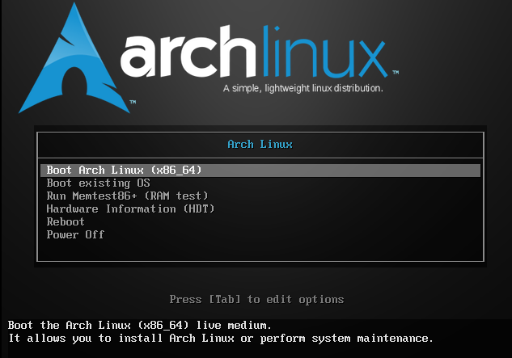
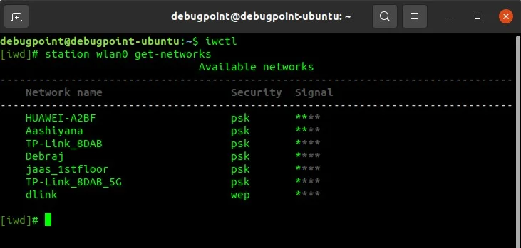
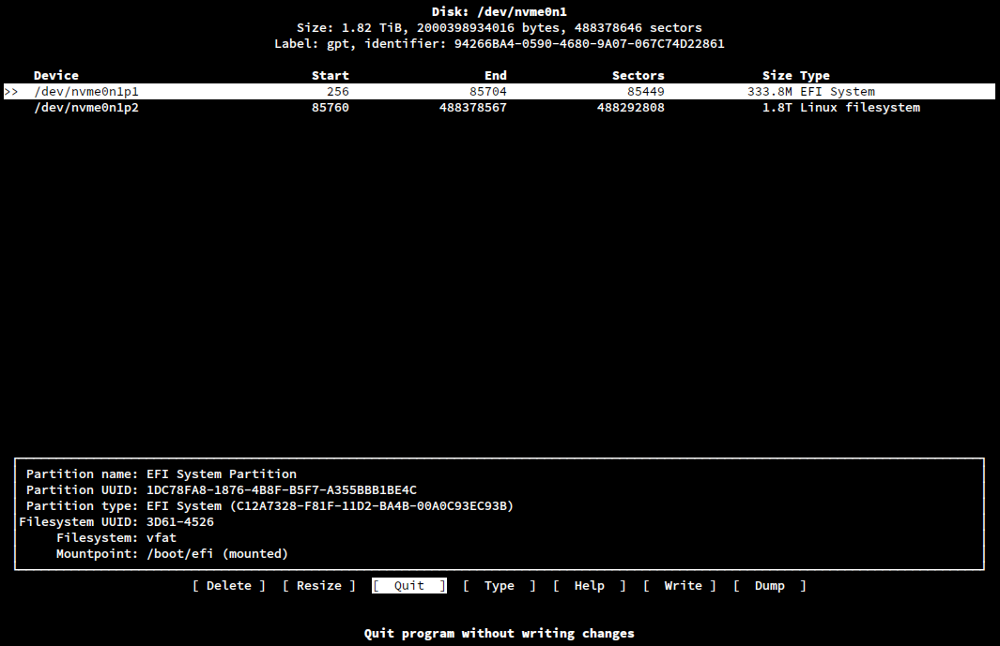

Apa itu Arch Linux?
Bagi kalangan antusias akan teknologi, mungkin sudah tidak asing lagi dengan nama Arch Linux. Hanya dengan namanya saja, banyak orang yang sudah membayangkan bahwa distro ini adalah sesuatu yang sulit, rumit, dan hanya untuk pengguna tingkat lanjut. Namun, apakah benar demikian? Apakah Arch Linux benar-benar sekompleks itu, ataukah ada pengalaman yang lebih menyenangkan di baliknya?
"In Arch, 'simple' is different than what other distros are considering. The learning is more important than getting something easily done."
— Judd Vinet, kreator Arch Linux
Pada segmen kali ini, kita akan bahas tentang pengalaman menggunakan Arch Linux, mulai dari awal instalasi hingga penggunaan sehari-hari. Disclaimer bahwa artikel ini bukan untuk menjelaskan cara instalasi atau konfigurasi Arch Linux secara detail, jadi jika ada yang salah silakan masuk ke dokumentasi Arch Linux.
Instalasi Arch Linux

Siapa di sini yang mendengar instalasi arch linux itu sulit? Ya, memang sulit "Ucap Orang-Orang". Sebenarnya tidak sesulit itu. Yang perlu kita lakukan adalah membuat installer USB yang berisi ISO Arch Linux. Kau bisa masuk ke tautan ini: Arch Linux Download.
Setelah menginstall ISO nya, buat bootable USB dengan software seperti Rufus atau Ventoy. Terserah pilih software apa, tapi aku lebih sering menggunakan Rufus karena lebih ringan dan "cepat".
Setelah selesai, restart komputer dan masuk ke menu boot. Oh iya, jangan lupa untuk sediakan partisi kosong untuk Arch Linux. Cara membuat partisi bisa dilihat pada artikel dari asus berikut: Link ke artikel.
Kembali ke instalasi, untuk masuk ke menu boot ada beberapa cara, namun yang paling mudah menurutku adalah dengan menekan tombol F2 berulang kali (Jika tidak bisa menggunakan F2, maka coba dengan esc atau F12). Setelah masuk ke menu boot, pilih USB yang sudah dibuat atau ubah posisi boot prioritynya ke paling atas (Jika tidak salah untuk ubah boot priority menggunakan tombol F5 atau F6), Save Changes dan restart.
Baik, Nanti akan muncul tampilan seperti pada gambar di bawah ini. INI SANGATLAH PENTING. PERBEDAAN TAMPILAN MENU BOOT MENANDAKAN KAU MEMASUKI MODE APA. KARENA ADA 2 MODE YAITU EFI DAN LEGACY, CATAT ITU BAIK-BAIK!.

Tampilan di atas menandakan kalian berada di mode legacy. Jika tidak seperti itu, artinya kalian berada di mode EFI. Untuk pengguna baru, aku sarankan untuk menggunakan mode EFI karena lebih modern dan memiliki fitur yang lebih baik dibandingkan dengan legacy. Namun, pastikan juga bahwa komputer kalian mendukung mode EFI sebelum memilihnya. (Aku juga menggunakan mode EFI untuk instalasi Arch Linux pertama kali)
Setelah menekan enter, akan banyak tulisan yang aku pun kurang tahu apa maksudnya namun sepertinya sedang mengaktifkan beberapa service tertentu. Setelah selesai selamat, kalian sudah masuk ke bagian instalasi Arch Linux. Layar akan terlihat seperti pada gambar di awal artikel ini.
Real Installation
Pemula pasti akan sangat-sangat bingung dengan apa yang harus dilakukan. Tapi tenang, tidak sesulit itu kok. Pertama-tama kita harus menyambungkan ke internet. Berbeda dengan Windows dan MacOS yang menyambungkan ke internet dengan GUI, di Arch Linux kita menggunakan terminal yang disebut Console dan software bernama iwctl.
Masukkan iwctl pada console, lalu ketik station list untuk melihat daftar jaringan wifi yang tersedia. Setelah itu, ketik station "nama-station" connect "nama-wifi" untuk menyambungkan ke wifi. Jika berhasil, akan muncul pesan "Connected to 'nama-wifi'". Jika tidak ada pesan Connected, kemungkinan besar memang sudah terconnect. Keluar dari iwctl dengan CTRL+D. Masukkan kode ping ping.archlinux.org untuk memastikan bahwa koneksi internet sudah berhasil. Jika muncul balasan seperti "64 bytes from archlinux.org: icmp_seq=1 ttl=56 time=10.2 ms", berarti koneksi internet sudah berhasil. Jika tidak, coba ulangi langkah-langkah di sebelumnya atau periksa kembali nama wifi dan password yang dimasukkan. Untuk dokumentasi lengkap tentang iwctl bisa melalui link berikut: Link ke dokumentasi.

Setelah berhasil tersambung ke internet, ada dua cara untuk melanjutkan instalasi yaitu dengan Archinstall dan Manual. Aku sarankan untuk menggunakan Archinstall untuk yang "absolute bayi" sama takut akan kebebasan. Namun, jika kalian ingin merasakan pengalaman instalasi yang lebih mendalam dan belajar lebih banyak tentang sistem operasi, maka manual adalah pilihan yang tepat. (Aku sendiri menggunakan manual untuk instalasi Arch Linux pertama kali karena... kenapa enggak?).
Saatnya membuat partisi (Inilah yang paling menegangkan dari instalasi Arch Linux karena jika salah langkah sedikit saja, maka komputermu bisa saja tidak bisa booting atau bahkan kehilangan data penting. Jadi pastikan untuk mengikuti langkah-langkahnya dengan benar dan hati-hati).
Aku tak sarankan menggunakan fdisk untuk partisi karena akan lama jika tidak benar-benar paham dengan apa yang terjadi. Kusarankan menggunakan cfdisk. Masukkan perintah cfdisk, lalu pilih gpt (yang paling umum). Nanti akan muncul tampilan seperti pada gambar di bawah ini.

Pastikan pilih disk yang ingin dijadikan Arch Linux (Partisi yang dibuat sebelumnya sebelum restart).
Buat 2 partisi yaitu swap dengan ukuran RAM x 2 dan root sebagai sisanya. CATATAN PENTING, INGAT DENGAN TAMPILAN BOOT SEBELUMNYA? YA, JIKA TAMPILAN LEGACY YA SUDAH HANYA BUAT 2 PARTISI, SEMENTARA JIKA TAMPILAN EFI MAKA BUAT SATU PARTISI UNTUK EFI. Disarankan 1 GB untuk partisi EFI.
Setelah selesai, pilih Write (Hati-hati karena cfdisk ini agak menyebalkan, jika tidak hati-hati kita bisa saja menekan tombol quit daripada menekan tombol write. Aku melakukannya kalau tidak salah 3 kali menekan tombol quit -_-). Ketik yes untuk konfirmasi
Akan muncul tulisan "the partition has been altered". Lalu tekan quit.
Oke, itu yang paling penting, sekarang kita perlu memastikan partisi sudah dibuat, ketik lsblk untuk lihat partisi yang sudah dibuat sebelumnya. Jika sudah ada 2 partisi (untuk legacy) atau 3 partisi (untuk EFI), maka kita lanjut ke langkah selanjutnya yaitu Format Partisi. Masukkan kode dibawah untuk tiap partisi yang dibuat:
mkfs.ext4 /dev/sdX1 (Ganti sdX1 dengan partisi root yang sudah dibuat sebelumnya)
mkswap /dev/sdX2 (Ganti sdX2 dengan partisi swap yang sudah dibuat sebelumnya)
swapon /dev/sdX2 (Aktifkan partisi swap)
(Jika menggunakan EFI, maka format partisi EFI dengan kode berikut)
mkfs.fat -F 32 /dev/sdX3 (Ganti sdX 3 dengan partisi EFI yang sudah dibuat sebelumnya)Setelah selesai, saatnya mount partisi yang sudah diformat. Mount itu semacam menyambungkan partisi yang sudah dibuat ke sistem operasi agar bisa digunakan. Masukkan kode berikut untuk mount partisi:
mount /dev/sdX1 /mnt (Ingat ya, Root Partisi)
mount --mkdir /dev/sdX3 /mnt/boot (untuk EFI)
swapon /dev/sdX2Oke, sekarang verifikasi dengan lsblk, nanti akan terlihat tampilan seperti berikut:
NAME MAJ:MIN RM SIZE RO TYPE MOUNTPOINT
sda 8:0 0 232.9G 0 disk
├─sda1 8:1 0 100M 0 part /mnt/boot
├─sda2 8:2 0 8G 0 part [SWAP]
└─sda3 8:3 0 224.9G 0 part /mnt
Jika sudah seperti itu, berarti partisi sudah berhasil dibuat, diformat, dan dimount. Selanjutnya kita perlu menginstall base system Arch Linux ke partisi yang sudah dibuat. Masukkan kode berikut untuk menginstall base system:
pacstrap /mnt base linux linux-firmware sof-firmware grub efibootmgr networkmanager nanoSebagai catatan, perintah di atas akan menginstall base system Arch Linux beserta beberapa paket penting seperti kernel linux, firmware, bootloader grub, dan networkmanager.
Setelahnya, kita perlu generate Fstab dengan perintah berikut:
genfstab -U /mnt >> /mnt/etc/fstabFstab itu semacam file konfigurasi yang berisi informasi tentang partisi dan mount point
Dengan melakukan semua itu, kita akhirnya akan masuk ke sistem yang kita buat. Kita akan gunakan arch-chroot untuk masuk ke sistem. Ya, dari tadi kita belum berada dalam sistem dan hanya berada di installer.
arch-chroot /mntKonfigurasi Sistem
Tampilan console akan berubah warna menjadi keabu-abuan. Itu artinya selamat, kita masuk ke sistem yang sudah kita buat. Sekarang kita buat hostname. Hostname itu semacam nama asli komputer kita, bukan nama user ya harus dicatat. Masukkan perintah berikut untuk membuat hostname dan mengatur passwordnya:
echo "boy" > /etc/hostname
(untuk nama hostname terserah sih)
passwd
New password: (Masukkan password terserah, tapi harus mudah diingat, kusarankan jangan pakai huruf kapital
Confirm password: (Masukkan password yang sama dengan sebelumnya)
passwd: password updated successfully
Tunggu sebentar, setelah kita selesai mengatur hostname dan passwordnya, Coba cek internet dengan ping ping.archlinux.org. 99% yang menggunakan wifi akan terputus, karena itu kita harus mengaktifkannya lagi. Ingat networkmanager yang sudah kita install sebelumnya? Kita akan gunakan itu untuk mengaktifkan wifi. Masukkan perintah berikut untuk mengaktifkan wifi:
systemctl enable NetworkManager
nmtui
nmtui itu semacam tool berbasis teks untuk menyambungkan ke wifi. Cukup mirip dengan GUI jadi tanpa dijelaskanpun pasti sudah bisa menggunakannya. Saatnya install GRUB.
GRUB itu semacam bootloader, ingat dengan tampilan diawal untuk memastikan kita berada di mode legacy atau UEFI? Ya, cukup mirip dengan menu seperti itu. Masukkan kode berikut:
grub-install --target=i386-pc /dev/sdX (Untuk Legacy, ganti sdX dengan disk yang digunakan untuk instalasi)
grub-install --target=x86_64-efi --efi-directory=/boot --bootloader-id=GRUBSetelah selesai, kita perlu generate konfigurasi GRUB dengan perintah berikut:
grub-mkconfig -o /boot/grub/grub.cfgTak ada masalah? bagus! waktu exit dari sistem dan masuk kembali ke Console. ketik umount -a untuk melepaskan partisi yang dibuat. Kita pun masukk ke moment of truth dengan mengetik "reboot now" untuk restart.
Moment of Truth
Setelah restart, kita akan masuk ke menu GRUB. Pilih Arch Linux dan tekan enter. Jika berhasil, kita akan masuk ke tampilan login console Arch Linux. Masukkan username dan password yang sudah dibuat sebelumnya untuk login.
Selamat, kalian sudah berhasil menginstall Arch Linux! Sekarang kita sudah berada di sistem operasi yang kita buat sendiri. Namun, ini baru permulaan. Jangan seperti pemula yang menggunakan mode root untuk semuanya. Kita akan membuat user baru. Masukkan perintah berikut:
useradd -m -G wheel -s /bin/bash boy
passwd boy
New password: (Masukkan password untuk user boy)
Confirm password: (Masukkan password yang sama dengan sebelumnya)
passwd: password updated successfully
Aku lupa bilang sebelumnya untuk menginstall 1 package penting lain yaitu sudo, masukkan perintah pacman -S sudo untuk install sudo. Seperti sebelumnya, 99% pengguna pasti tak mendapatkan internet, jadi gunakan nmtui untuk mengaktifkan wifinya... lagi.
Setelah itu, kita perlu memberikan izin sudo kepada user yang sudah dibuat. Masukkan perintah berikut untuk memberikan izin sudo:
EDITOR=nano visudoSetelah itu, cari baris # %wheel ALL=(ALL:ALL) ALL dan hapus tanda # di depannya. Simpan dengan CTRL+O lalu keluar dengan CTRL+X.
Sekarang kita sudah memiliki user dengan izin sudo. Coba logout dengan perintah exit, lalu login kembali dengan user yang sudah dibuat. Masukkan perintah berikut untuk memastikan bahwa user sudah memiliki izin sudo:
su boy
sudo pacman -SyuJika muncul pesan "Password for boy: " dan setelah memasukkan password muncul pesan "error: failed to synchronize all databases (could not connect to server)", berarti user sudah memiliki izin sudo, tapi koneksi internetnya masih belum aktif. Gunakan nmtui untuk mengaktifkan wifi... lagi.
Desktop Environment alias make up Arch Linux
Oke, sekarang kita sudah memiliki sistem operasi yang berjalan, tapi masih dalam bentuk console yang sangat tidak user-friendly. Kita perlu menginstall desktop environment untuk membuatnya lebih mudah digunakan. Ada banyak desktop environment yang bisa dipilih, seperti GNOME, KDE, XFCE, dan lain-lain.
Ketik exit untuk masuk ke root user. Lalu masukkan kode dibawah ini:
pacman -S lxqt sddm konsole thunar firefox neofetch kittyKlik tombol Enter saja terus sampai proses instalasi dimulai. Sebagai catatan, berikut maksud dari kode di atas.
- lxqt = Desktop Environment yang kupilih
- sddm = Login Manager agar tampilan login tidak hanya terminal
- konsole = Konsole
- thunar = File manager paling umum
- firefox = Web Browser
- neofetch = Untuk melakukan ritual linux
- kitty = Terminal (PENTING YA, HARUS DIINSTALL)
Kesimpulan
An Apparation
Not of this world
But because of it
Lurking out of frame
Awake, my heart is a fortress
In dreams I am vulnerable